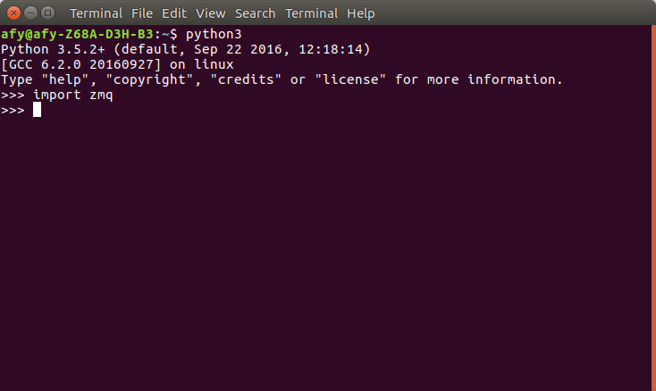

Checking For An Existing ZeroMQ Installation
Open a command window, and start Python3.
Then at the Python prompt type:
import zmq
If you see no errors, you have ZeroMQ installed.
If ZeroMQ is not installed, follow the procedures for your platform.

Windows Users
Although you can build ZeroMQ from source, the easiest way to install is by using a provided MSI installer.
I used this link on Windows 10 64 Bit without issue. It installs both ZeroMQ and PyZMQ.
If you are running a 32 Bit machine, go here and find latest compatible MSI installer for your system.
Linux Users
Here are the steps necessary to build and install ZeroMQ on Ubuntu, BeagleBone Black and Raspberry Pi.
- sudo apt-get update
- sudo apt-get upgrade
- sudo apt-get install python3.5-dev (not available for Raspberry Pi)
- cd
- sudo apt-get install libtool pkg-config build-essential autoconf automake
- mkdir build
- cd build/
- wget https://download.libsodium.org/libsodium/releases/libsodium-1.0.8.tar.gz
- tar -zxvf libsodium-1.0.8.tar.gz
- cd libsodium-1.0.8/
- ./configure
- make
- sudo make install
- sudo ldconfig
- cd ..
- wget http://download.zeromq.org/zeromq-4.1.4.tar.gz
- tar -zxvf zeromq-4.1.4.tar.gz
- cd zeromq-4.1.4/
- ./configure
- make
- sudo make install
- sudo ldconfig
- reboot
Mac Users
I do not own a Mac so I can't verify the following sources. But I have built from source for Linux on Ubuntu, BeagleBone Black and Raspberry Pi without issue.